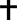
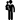
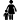

OngekendFamilie:
Ongekend

Ongekend
Verwante:SCHERRENS Barbara TeresiaKind(eren):
07/11/1764 Wingene BEL - Ongekend
Ouders:SCEERENS Joannes Baptista
DE HELLEBUIJCK Maria ElizabethaDE CLERCQ Carolina
DE CLERCQ Amandus
DE CLERCQ Leo
DE CLERCQ Isabella
DECLERCQ HenricusFamilie:
GOBYN Juliana
Verwante:SCHERRENS Irma MariaKind(eren):
09/11/1885 Beernem BEL - 20/06/1960 Gent BEL
Ouders:SCHERRENS Joannes (Jan)
DE FAUW Virginia SophiaDECLERCQ Suzanne
DECLERCQ Gerard
DECLERCQ Roger